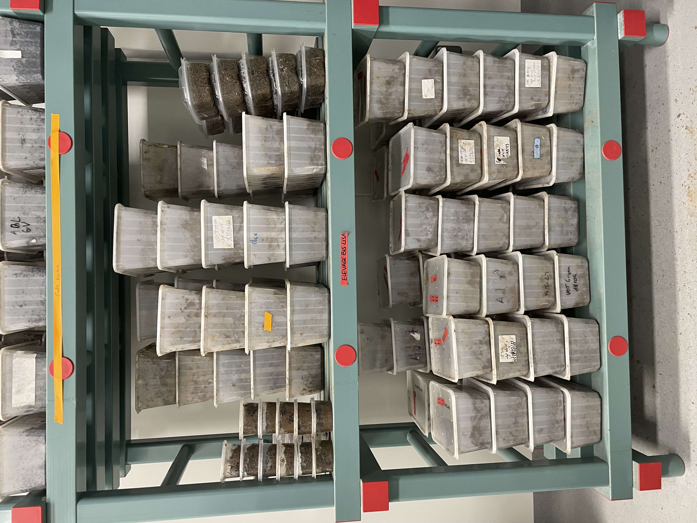
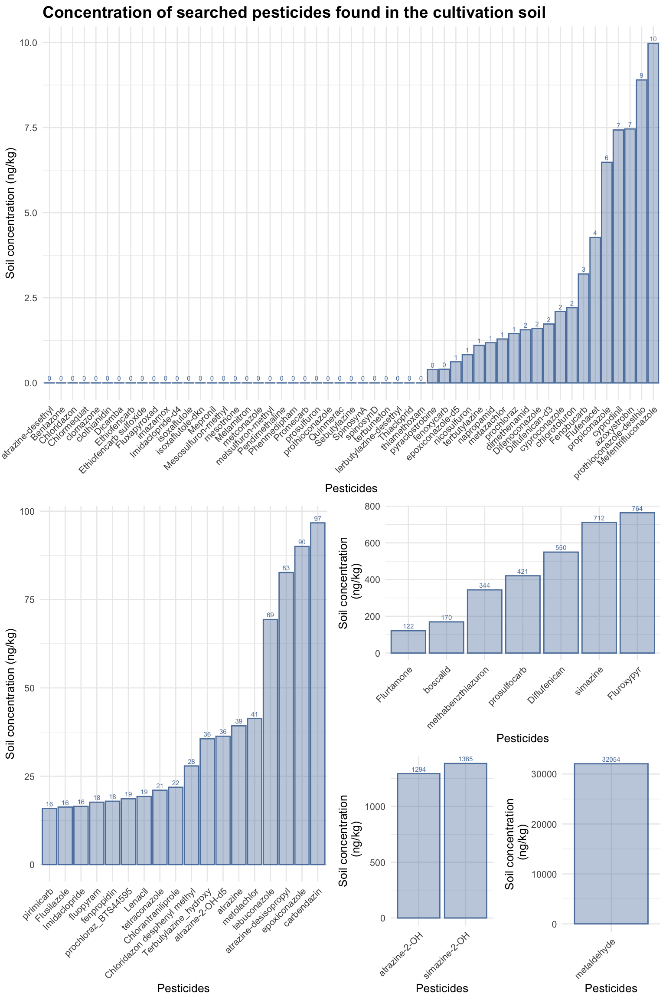
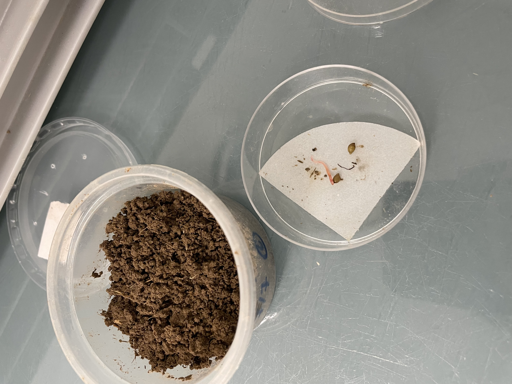
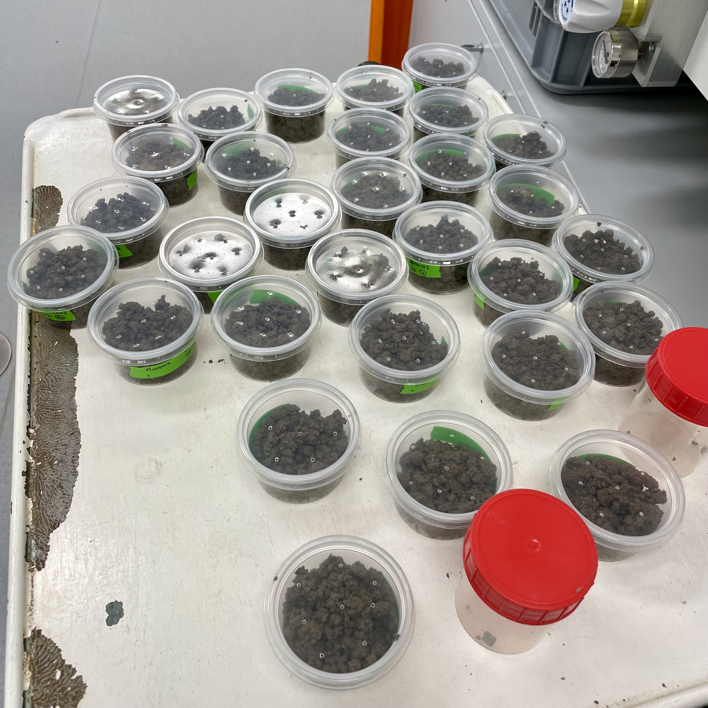
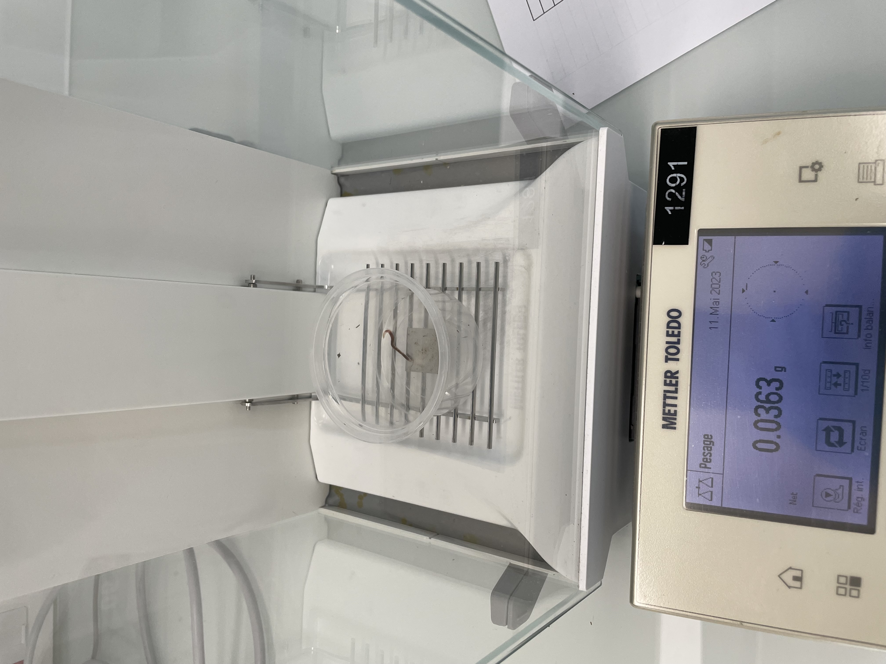
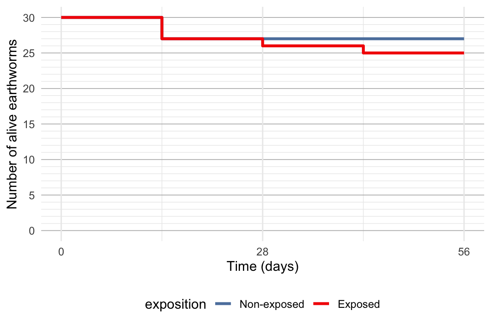
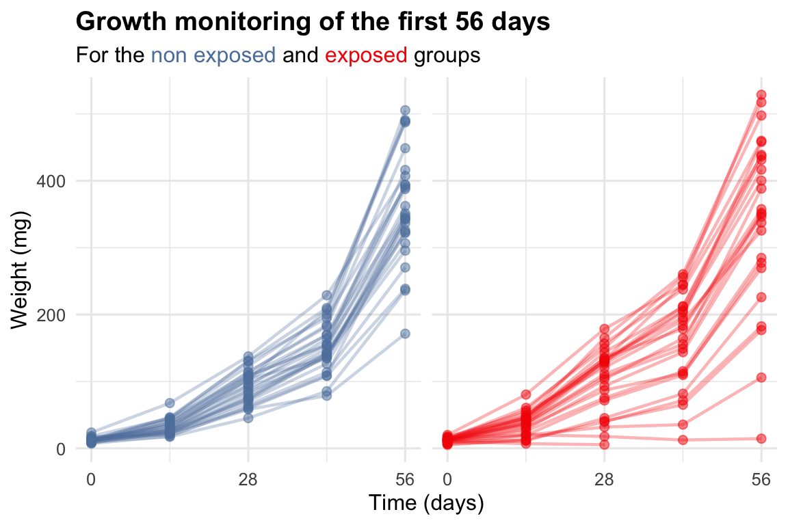

Aporrectodea caliginosa (Figure 3.1) was the chosen biological model for it is considered highly representative of agricultural soil (Bart, 2018) and is part of the most sensitive agricultural species to pesticides (Pelosi et al., 2013). It is also a species we are able to cultivate under laboratory conditions (Section 3.1.2).
Figure 3.2: Aporrectodea caliginosa life cycle. Figure taken from Bart (2018)
3.1.2 Eartworm cultivation
Individuals used were bred in the laboratory from individuals initially collected from an agricultural field in Estrée-Mons, France (49°52’ N, 3°01’ E) in 2019.
Individuals are bred at 18°C in 1 L vessels in groups of five individuals (Figure 3.3) using a loamy soil texture called Closeaux soil (based on the texture definition of the Food and Agriculture Organization of the United Nations (FAO)), sampled from a permanent grassland in Versailles (48°48′ N, 2°5′ E) where no pesticides have been applied for more than 25 years. Pesticides found in the soil are summarized in Figure 3.4. The soil was collected from the top 0-20 cm, air-dried and crushed to pass a 2 mm mesh. Soil culture is kept with a soil water-holding capacity (WHC) of 60-70% and individuals are fed with horse dung frost and defrosted twice before being milled (> 1mm) as presented in Lowe & Butt (2005).

Figure 3.3: Earthworm culture at the EcoSys laboratory in Palaiseau.
Division of the pesticides in groups of similar concentration levels.

Figure 3.4: Concentrations of pesticides found in the cultivation soil for our earthworms.
To get synchronized cohorts of hatchlings, cocoons were collected in the breeding culture by wet sieving the soil through a 1-mm mesh size (Bart, 2018), and incubated at 18°C in Petri dishes on wet filter papers (holmstrup_1991?) (Figure 3.5). Everyday, new hatchlings were collected and stored in soil at 4°C, to slow their development until the start of the experiment.

Figure 3.5: Newly hatched juvenile ready to be put in a small cosm of soil.
3.2 Growth experiment protocol
3.2.1 Overview
The growth experiment was performed based on an adaptation of the protocol of Bart et al. (2020). We monitored the growth of 60 earthworms, each randomly allocated to exposed or unexposed conditions (30 individuals per treatment) in individual vessels, during a total of 56 days. Earthworms were individually weighted every 14 days (with their gut content).
The experiment was performed using the LUFA 2.4 soil, a standardized soil from Speyer. This soil was chosen for it is a loamy soil close to agricultural soils, with a pH of 7.5 and an organic carbon percentage of 1.83% (main soil characteristics are available in Table SI). It was maintained at 70% WHC by adding water from the surface. The soil was renewed after 28 days to keep earthworms in fresh soil and therefore in ideal conditions for growth. For the exposed cohort, it meant the pesticides concentrations were renewed after 28 days. We fed individuals every 14 days with 3 g of horse dung mixed to the soil, corresponding to ad libitum conditions. Similarly to our rearing protocol, individuals were kept in a thermoregulated enclosure at 18°C in complete darkness. Earthworms were individually placed in small High Density PolyEthylene vessels (5 cm x 5∅ cm) with 50 g of soil (dry weight).
In the pesticide treatment, we used a mixture of two molecules, , epoxiconazole (EPX) and dimoxystrobin (DMX), which are the main active substances of several pesticides, including the now banned, but largely used in the past, Swing® Gold (BASF Agro SAS, dimoxystrobin 133 g.L-1, epoxiconazole 50 g.L-1), a broad spectrum fungicide for cereal crops. Epoxiconazole is still frequently found in agricultural soils in France because of its persistance (Pelosi et al., 2021). Pesticide exposure in the exposed cohort was done by adding a diluted solution of DMX and EPX equivalent to 3 RD of Swing® Gold, a dose shown to have sublethal effects on A. caliginosa growth (Bart et al., 2020). Swing® Gold recommended dose (RD) is 1.5 L.ha-1. Considering that active substances of pesticides are mainly found in the first ten centimeters of soil (Chabauty et al., 2016; McDonald et al., 2013), and that the LUFA 2.4 soil has a density of 1.18, we calculated that the corresponding concentrations of the two molecules should be 165.0 µg of DMX per kg of dry soil and 190.3 µg of EPX per kg of dry soil. The dry soil was spiked with aqueous solutions of the mixture for contamination and to adjust its water holding capacity (WHC) to 70%.
3.2.2 Detailed processes
3.2.2.1 Preparation of soils and cosms
The soil is prepared the day prior to the day it is really renewed (D-1 and D27). To do so, we had primary solutions of epoxiconazole and dimoxystrobin in acetonitrile (396.0 mg/L and 384.61 mg/L respectively).
We used the following procedure to prepare the soils (Figure 3.6) :
To prepare the control soil :
In a large recipient, weight 2 kg of LUFA 2.4 soil previously put in an oven at 80°C for 48h to dry it;
Prepare a solution of 659 mL of water with 3.5 µL of acetonitrile (to match the amount put in the contaminated soil);
Add this solution to the soil, do not mix;
Cover the recipient with an aluminum sheet and put it in a thermoregulated chamber at 18°C.
To prepare the contaminated soil :
Prepare the secondary solutions of DMX and EPX (diluted 100 times) : The primary solution are taken out of the fridge for at least 30 min so the solutions go back to room temperature. For each molecule, take a 5 mL volumetric flask 3/4 filled with water, add 50 µL of the corresponding primary solution, mix and complete the volumetric flask with water.
In a large recipient, weight 2 kg of LUFA 2.4 soil previously put in an oven at 80°C for 48h to dry it;
Put 500 mL of water in a 1l beaker;
In this beaker, add 257 µL of the secondary solution of DMX and 96 µL of the secondary solution of EPX;
Homogeneously spray these 500 mL on top of the soil;
Use 160 mL of water to rince the sprayer and spray it too;
Cover the recipient with an aluminum sheet and put it in a thermoregulated chamber at 18°C.
At D0 and D28, individual cosms are prepared with the soil preparations and the addition of horse dung.
To prepare the cosms :
Weight and humidify horse dung at 70% of its WHC (WHC 100% = 304 mL);
Add, in each cosm, 9.1 g of this horse dung preparation;
Mix the prepared soil;
Add 66.5 g of soil in each cosm;
Mix the soil with the horse dung;
Weigth the earthworm. To do so, earthworms are rinced in a cup of water to remove any soil particules and then softely dried on paper towel before being weighted on a precision balance (Figure 3.7).
Put the earthworm in its corresponding cosm;
Weight the overall weight of the cosm and note it on its lid;
Put the cosms in thermoregulated chambers at 18°C.
Each time, soil samples are kept at 20°C for chemical analysis.

Figure 3.6: Preparation of the small cosms.
3.2.2.2 Maintenance
Each week, the WHC is adjusted thanks to the overall weight of the cosm noted right after it was prepared. Water is added to the surface of the soil to reach this weight again.
Each 14 days, earthworms are weighted.

Figure 3.7: Weighting of a juvenile earthworm.
3.3 Results of the growth experiment
Data from this experiment can be found in this repository : “data\Data_growth_EPX_DMX.xlsx”
Variables names :
date : Date of the measurement
ID : Identification number of the earthworm
birth_date: Birthday of the earthworm
t : Number of days since the start of the exposition
Variance homogeneity test with a F-test. If the test isn’t sinificant, the dataset is not inconsistent with a ratio of variances equal to 1.
F test to compare two variances
data: subset(df_growth_t0, exposition == "Ctrl")$w and subset(df_growth_t0, exposition == "Trt")$w
F = 1.1901, num df = 29, denom df = 29, p-value = 0.6424
alternative hypothesis: true ratio of variances is not equal to 1
95 percent confidence interval:
0.5664681 2.5004941
sample estimates:
ratio of variances
1.190147
The datasets are not inconsistent with a ratio of variances equal to 1.
Then, we can test if there is an effect of the cohort on the initial weight of individuals with a t-test :
T-test : If the test is significant, the dataset is not inconsistent with an effect of the group on the initial weight of individuals.
Two Sample t-test
data: df_growth_t0$w by df_growth_t0$exposition
t = -0.024192, df = 58, p-value = 0.9808
alternative hypothesis: true difference in means between group Ctrl and group Trt is not equal to 0
95 percent confidence interval:
-1.953987 1.907321
sample estimates:
mean in group Ctrl mean in group Trt
12.41333 12.43667
We can conclude there is no effect of the cohort on the initial weight of the individuals.
3.3.2 Growth of individuals
Code
# We go back from the raw data to do a general summarydf_growth_ctrl <-subset(df_growth_raw,exposition=="Ctrl")df_growth_trt <-subset(df_growth_raw,exposition=="Trt")df_growth_raw_mean <- df_growth_raw |>aggregate(w~t+exposition, mean)df_growth_ctrl_mean <-subset(df_growth_raw_mean,exposition=="Ctrl")df_growth_trt_mean <-subset(df_growth_raw_mean,exposition=="Trt")N_Sample <-c(n_distinct(df_growth_ctrl[df_growth_ctrl$t==0,]$ID),n_distinct(df_growth_trt[df_growth_trt$t==0,]$ID) )N_dead_D56 <-c(n_distinct(subset(df_growth_ctrl, t==56& status=="D")$ID), n_distinct(subset(df_growth_trt, t==56& status=="D")$ID) )Mean_w_init <-c(subset(df_growth_ctrl_mean, t==0)$w, subset(df_growth_trt_mean, t==0)$w )C95_w_init <-c(quantile(subset(df_growth_ctrl, t==0)$w, c(0.025, 0.975)), quantile(subset(df_growth_trt, t==0)$w, c(0.025, 0.975)) )Mean_w_D56 <-c(subset(df_growth_ctrl_mean, t==56)$w, subset(df_growth_trt_mean, t==56)$w )C95_w_D56 <-c(quantile(subset(df_growth_ctrl, t==56)$w, c(0.025, 0.975), na.rm=TRUE), quantile(subset(df_growth_trt, t==56)$w, c(0.025, 0.975), na.rm=TRUE) )Absolute_growth_rates <-cbind( (subset(df_growth_ctrl, t==56)$w-subset(df_growth_ctrl, t==0)$w)/56, (subset(df_growth_trt, t==56)$w-subset(df_growth_trt, t==0)$w)/56 )Mean_a <-c(mean(Absolute_growth_rates[,1], na.rm=TRUE), mean(Absolute_growth_rates[,2], na.rm=TRUE) )C95_a <-c(quantile(Absolute_growth_rates[,1], c(0.025, 0.975), na.rm=TRUE), quantile(Absolute_growth_rates[,2], c(0.025, 0.975), na.rm=TRUE) )df_summary <-data.frame(Cohort =c("Non exposed", "exposed"),N_sample=N_Sample,N_dead=N_dead_D56,w_init=paste(round(Mean_w_init,1), " [",round(C95_w_init[1],1)," ; ",round(C95_w_init[2],1),"]" , sep="" ),Mean_w_D56=paste(round(Mean_w_D56,1)," [",round(C95_w_D56[1],1)," ; ",round(C95_w_D56[2],1),"]" , sep="" ),Mean_a=paste(round(Mean_a,1)," [",round(C95_a[1],1)," ; ",round(C95_a[2],1),"]" , sep="" ) )colnames(df_summary) <-c("Cohort", "Sample size", "Number of dead individuals", "Initial weight {2.5% ; 97.5% quantiles} (mg)", "Weight after 56 days (mg)", "Absolute growth rate (mg/d)" )df_summary <-as.data.frame(t(df_summary)) names(df_summary) <-as.character(df_summary[1,])df_summary <- df_summary[-1,]df_summary |>datatable(options =list(dom ='t'), class="hover")
Table 3.1: Summary of the collected growth data.
Code
# Survival curvesdf_growth_raw <- df_growth_raw |>mutate(dead =case_when( status =="D"~1, status %in%c("J", "S", "A") ~0) )df_surv <- df_growth_raw |>arrange(t) |>group_by(t,exposition) |>summarise(n =n(),n_dead =sum(dead),n_alive = n - n_dead,survival_prob =cumprod((n_alive/n)) ) |>ungroup()# Survival curve plotp_surv <-ggplot( df_surv, aes(x = t, y = n_alive, color=exposition ) ) +geom_step(linewidth =1.2) +# Utilise geom_step pour représenter les étapes de la courbescale_color_manual(values=c(col_blue, col_red), labels =c("Non-exposed", "Exposed"))+scale_fill_manual(name ="Exposition", values=c(col_blue, col_red))+lims(y=c(0,30), x=c(0,56) ) +labs(#title = "Survival curves",x ="Time (days)",y ="Number of alive earthworms" ) +scale_y_continuous(limits =c(0, 30), breaks =seq(0, 30, by =5), minor_breaks =seq(0, 30, by =1) ) +scale_x_continuous(limits =c(0, 56), breaks =seq(0, 56, by =28),minor_breaks =seq(0, 56, by =14) ) +theme_minimal(12)+theme(legend.position ="bottom", plot.title=element_text(size=sizetitle, face="bold"),axis.title.x =element_text(face="plain"), axis.title.y =element_text(face="plain"),panel.grid.major.y =element_line(color ="gray70", size =0.3), # Lignes principales plus visiblespanel.grid.minor.y =element_line(color ="gray90", size =0.2), # Lignes secondaires plus subtiles )p_surv
1
Addition of dead status column.
2
Calculation of number of alive individual per group throughout time.

Figure 3.9: Survival curves for both cohorts.
Figure 3.10: Evolution of fresh body weight of non-exposed earthworms (blue points and thin lines, each line corresponding to one individual) and earthworms exposed to the equivalent of 3 RD of Swing® Gold renewed each 28 days (red points and thin lines, each line corresponding to one individual). The thicker lines represent the mean body weight per cohort.
For both cohorts, the change in cosm size (day 56) seems to correspond with an additional stress to the organisms (see Figure 3.10). As all experiment parameters could only be controlled from day 1 to day 56, only the data recorded during this period are used for the analysis done in this study. Individuals that died before 14 days of experiment were also removed for the analysis.
# ID of dead individuals before 14 days of experimentdead <-subset(df_growth, t==14& status =="D")$IDdf_growth_56 <- df_growth |>subset(t<57)df_growth_56_alive <- df_growth_56 |>subset(!ID %in% dead)
1
ID of dead individuals before 56 days of experiment
2
Dataset of the first 56 days without those individuals
Code
alpha_point <-0.5alpha_line <-0.3plot <-ggplot(data=df_growth_56_alive, aes(x=t, y=w, color=exposition, group=as.factor(ID) ) )+facet_wrap(~exposition)+geom_point(alpha=alpha_point, size=2)+geom_line(lwd=0.8, alpha=alpha_line)+scale_color_manual(values = pal_col, label =c("Non exposed", "Exposed"), name ="" )+labs(x="Time (days)", y="Weight (mg)",title ="Growth monitoring of the first 56 days",subtitle ="For the <span style = 'color:#5E81AC;'>non exposed</span> and <span style = 'color:#f42404;'>exposed</span> groups" )+scale_x_continuous(limits =c(0, 56), breaks =seq(0, 56, by =28), minor_breaks =seq(0, 56, by =14) ) +theme_minimal(12) +theme(legend.position ="none",title=element_markdown(face="bold"),plot.subtitle=element_markdown(face="plain"),axis.title=element_text(face="plain"),strip.background =element_blank(),strip.text =element_blank() )plot

Figure 3.11: Evolution of fresh body weight of non-exposed earthworms (blue points and thin lines, each line corresponding to one individual) and earthworms exposed to the equivalent of 3 RD of Swing® Gold renewed each 28 days (red points and thin lines, each line corresponding to one individual).
Code
# Comparison of the final mean weight in the two groupsvar.test(subset(df_growth_56_alive, exposition=="Ctrl"& t==56)$w,subset(df_growth_56_alive, exposition=="Trt"& t==56)$w )t.test( df_growth_56_alive$w ~ df_growth_56_alive$exposition,var.equal=F )
1
Test of the variance homogeneity hypothesis.
2
Welsh two sample t-test
F test to compare two variances
data: subset(df_growth_56_alive, exposition == "Ctrl" & t == 56)$w and subset(df_growth_56_alive, exposition == "Trt" & t == 56)$w
F = 0.40594, num df = 26, denom df = 24, p-value = 0.02697
alternative hypothesis: true ratio of variances is not equal to 1
95 percent confidence interval:
0.1807097 0.9001427
sample estimates:
ratio of variances
0.4059418
Welch Two Sample t-test
data: df_growth_56_alive$w by df_growth_56_alive$exposition
t = 0.10094, df = 260.61, p-value = 0.9197
alternative hypothesis: true difference in means between group Ctrl and group Trt is not equal to 0
95 percent confidence interval:
-30.86544 34.20074
sample estimates:
mean in group Ctrl mean in group Trt
129.9956 128.3279
The final mean weights do not differ significatively between the two cohorts (Welsh Two Sample t-test, p-value = 0.85).
Bart, S. (2018). Impacts comportementaux, démographiques et fonctionnels des pesticides sur des annélides oligochètes du sol. Université Paris-Saclay.
Bart, S., Pelosi, C., Nélieu, S., Lamy, I., & Péry, A. R. R. (2020). An energy-based model to analyze growth data of earthworms exposed to two fungicides. Environmental Science and Pollution Research, 27(1), 741–750. https://doi.org/10.1007/s11356-019-06985-z
Chabauty, F., Pot, V., Bourdat-Deschamps, M., Bernet, N., Labat, C., & Benoit, P. (2016). Transport of organic contaminants in subsoil horizons and effects of dissolved organic matter related to organic waste recycling practices. Environmental Science and Pollution Research, 23(7), 6907–6918. https://doi.org/10.1007/s11356-015-5938-9
McDonald, J., Gaston, L., Elbana, T., Andres, K., & Cranfield, E. (2013). Dimoxystrobin sorption and degradation in sandy loam soil: Impact of different landscape positions. Soil Science, 178, 662–670. https://doi.org/10.1097/SS.0000000000000030
Pelosi, C., Joimel, S., & Makowski, D. (2013). Searching for a more sensitive earthworm species to be used in pesticide homologation tests – A meta-analysis. Chemosphere, 90(3), 895–900. https://doi.org/10.1016/j.chemosphere.2012.09.034
Pelosi, C., Thiel, P., Bart, S., Amossé, J., Jean-Jacques, J., Thoisy, J.-C., & Crouzet, O. (2021). The contributions of enchytraeids and earthworms to the soil mineralization process in soils with fungicide. Ecotoxicology, 30(9), 1910–1921. https://doi.org/10.1007/s10646-021-02452-z
Source Code
```{r, include=F}library(tidyverse); library(here); library(readxl); library(ggbreak);library(ggpubr); library(gridExtra) ; library(patchwork); library(knitr)library(ggtext); library(kableExtra); library(DT); library(ggiraph); library(nord)Nord_frost <- nord(palette = "frost")col_blue <- "#5E81AC"col_red <- "#f42404"pal_col <- c(col_blue, col_red)sizetitle <- 12```# Longitudinal monitoring of earthworm growth exposed to a fungicide## Earthworms### Earthworm model - *Aporrectodea caliginosa**Aporrectodea caliginosa* (@fig-cali) was the chosen biological model for it is considered highly representative of agricultural soil [@bart_2018] and is part of the most sensitive agricultural species to pesticides [@pelosi_2013]. It is also a species we are able to cultivate under laboratory conditions (@sec-ewcultivation).{#fig-cali width="50%"}Its life cycle at 15°C is presented @fig-AcaliLC.{#fig-AcaliLC}### Eartworm cultivation {#sec-ewcultivation}Individuals used were bred in the laboratory from individuals initially collected from an agricultural field in Estrée-Mons, France (49°52' N, 3°01’ E) in 2019.Individuals are bred at 18°C in 1 L vessels in groups of five individuals (@fig-ewculti) using a loamy soil texture called Closeaux soil (based on the texture definition of the Food and Agriculture Organization of the United Nations (FAO)), sampled from a permanent grassland in Versailles (48°48′ N, 2°5′ E) where no pesticides have been applied for more than 25 years. Pesticides found in the soil are summarized in @fig-closeauxPPP. The soil was collected from the top 0-20 cm, air-dried and crushed to pass a 2 mm mesh. Soil culture is kept with a soil water-holding capacity (WHC) of 60-70% and individuals are fed with horse dung frost and defrosted twice before being milled (\> 1mm) as presented in @lowe_2005.{#fig-ewculti width="50%"}```{r, echo=T, warning=F, message=F}#| fig-cap: Concentrations of pesticides found in the cultivation soil for our earthworms. #| label: fig-closeauxPPP#| fig-width: 8#| fig-height: 12#| title: Pesticides found in the cultivation soil# Data of measured pesticides concentrations in the Closeaux soil df_PPPclx <- read_excel( here::here("data/Data_pesticides_closeaux_soil.xlsx"), sheet="Clx" ) |> mutate(Conc = round(C_calc, 2))# Separation per scaledf_PPPclx <- df_PPPclx |> # <1> mutate(Molecule = fct_reorder(Molecule, Conc)) |> # <1> mutate(facet = case_when(Conc <= 10 ~ 1, # <1> Conc <= 100 & Conc > 10 ~ 2, # <1> Conc <= 1000 & Conc > 100 ~ 3, # <1> Conc <= 10000 & Conc > 1000 ~ 4, # <1> Conc <= 100000 & Conc > 10000 ~5)) # <1>df_PPPclx_10 <- df_PPPclx |> subset(facet==1)df_PPPclx_100 <- df_PPPclx |> subset(facet==2)df_PPPclx_1000 <- df_PPPclx |> subset(facet==3)df_PPPclx_10000 <- df_PPPclx |> subset(facet==4)df_PPPclx_100000 <- df_PPPclx |> subset(facet==5)Size_text <- 10size_label <- 2plot_1 <- ggplot( data=df_PPPclx_10, aes( x=Molecule, y=Conc ) )+ geom_col( color=col_blue, fill=col_blue, alpha=0.4 )+ geom_text( aes( label = round(Conc) ), vjust = -0.5, color=col_blue, size=size_label )+ labs( x = "Pesticides", y = "Soil concentration (ng/kg)", title = "Concentration of searched pesticides found in the cultivation soil" )+ theme_minimal(Size_text)+ theme( axis.text.x = element_text(angle = 45, hjust = 1), plot.title = element_text(face="bold", size=14) )plot_2 <- ggplot( data=df_PPPclx_100, aes( x=Molecule, y=Conc ) )+ geom_col( color=col_blue, fill=col_blue, alpha=0.4 )+ geom_text( aes( label = round(Conc) ), vjust = -0.5, color=col_blue, size=size_label )+ labs( x="Pesticides", y="Soil concentration (ng/kg)" )+ theme_minimal(Size_text)+ theme(axis.text.x = element_text(angle = 45, hjust = 1))plot_3 <- ggplot( data=df_PPPclx_1000, aes( x=Molecule, y=Conc ) )+ geom_col( color=col_blue, fill=col_blue, alpha=0.4 )+ geom_text( aes( label = round(Conc) ), vjust = -0.5, color=col_blue, size=size_label )+ labs( x="Pesticides", y="Soil concentration\n (ng/kg)" )+ theme_minimal(Size_text)+ theme(axis.text.x = element_text(angle = 45, hjust = 1))plot_4 <- ggplot( data=df_PPPclx_10000, aes( x=Molecule, y=Conc ) )+ geom_col( color=col_blue, fill=col_blue, alpha=0.4 )+ geom_text( aes( label = round(Conc) ), vjust = -0.5, color=col_blue, size=size_label )+ labs( x="Pesticides", y="Soil concentration\n (ng/kg)" )+ theme_minimal(Size_text)+ theme(axis.text.x = element_text(angle = 45, hjust = 1))plot_5 <- ggplot( data=df_PPPclx_100000, aes( x=Molecule, y=Conc ) )+ geom_col( color=col_blue, fill=col_blue, alpha=0.4 )+ geom_text( aes( label = round(Conc) ), vjust = -0.5, color=col_blue, size=size_label )+ labs( x="Pesticides", y="Soil concentration\n (ng/kg)" )+ theme_minimal(Size_text)+ theme(axis.text.x = element_text(angle = 45, hjust = 1))#plotgrid.arrange(plot_1, plot_2, plot_3, plot_4, plot_5, ncol=3, layout_matrix = cbind(c(1,1,2,2), c(1,1,2,2), c(1,1,3,4), c(1,1,3,5)))```1. Division of the pesticides in groups of similar concentration levels.To get synchronized cohorts of hatchlings, cocoons were collected in the breeding culture by wet sieving the soil through a 1-mm mesh size [@bart_2018], and incubated at 18°C in Petri dishes on wet filter papers [@holmstrup_1991] (@fig-cocoons). Everyday, new hatchlings were collected and stored in soil at 4°C, to slow their development until the start of the experiment.{#fig-cocoons width="30%"}## Growth experiment protocol### OverviewThe growth experiment was performed based on an adaptation of the protocol of @bart_2020a. We monitored the growth of 60 earthworms, each randomly allocated to exposed or unexposed conditions (30 individuals per treatment) in individual vessels, during a total of 56 days. Earthworms were individually weighted every 14 days (with their gut content).The experiment was performed using the LUFA 2.4 soil, a standardized soil from Speyer. This soil was chosen for it is a loamy soil close to agricultural soils, with a pH of 7.5 and an organic carbon percentage of 1.83% (main soil characteristics are available in Table SI). It was maintained at 70% WHC by adding water from the surface. The soil was renewed after 28 days to keep earthworms in fresh soil and therefore in ideal conditions for growth. For the exposed cohort, it meant the pesticides concentrations were renewed after 28 days. We fed individuals every 14 days with 3 g of horse dung mixed to the soil, corresponding to ad libitum conditions. Similarly to our rearing protocol, individuals were kept in a thermoregulated enclosure at 18°C in complete darkness. Earthworms were individually placed in small High Density PolyEthylene vessels (5 cm x 5∅ cm) with 50 g of soil (dry weight).!!!!!!!!!!!!!! TABLEAU CARAC LUFA !!!!!!!!!!!!!!!!!!!!!!!In the pesticide treatment, we used a mixture of two molecules, , epoxiconazole (EPX) and dimoxystrobin (DMX), which are the main active substances of several pesticides, including the now banned, but largely used in the past, Swing® Gold (BASF Agro SAS, dimoxystrobin 133 g.L-1, epoxiconazole 50 g.L-1), a broad spectrum fungicide for cereal crops. Epoxiconazole is still frequently found in agricultural soils in France because of its persistance [@pelosi_2021]. Pesticide exposure in the exposed cohort was done by adding a diluted solution of DMX and EPX equivalent to 3 RD of Swing® Gold, a dose shown to have sublethal effects on A. caliginosa growth [@bart_2020a]. Swing® Gold recommended dose (RD) is 1.5 L.ha-1. Considering that active substances of pesticides are mainly found in the first ten centimeters of soil [@chabauty_2016; @mcdonald_2013], and that the LUFA 2.4 soil has a density of 1.18, we calculated that the corresponding concentrations of the two molecules should be 165.0 µg of DMX per kg of dry soil and 190.3 µg of EPX per kg of dry soil. The dry soil was spiked with aqueous solutions of the mixture for contamination and to adjust its water holding capacity (WHC) to 70%.### Detailed processes#### Preparation of soils and cosmsThe soil is prepared the day prior to the day it is really renewed (D-1 and D27). To do so, we had primary solutions of epoxiconazole and dimoxystrobin in acetonitrile (396.0 mg/L and 384.61 mg/L respectively).We used the following procedure to prepare the soils (@fig-prepasmallcosm) :To prepare the control soil :1. In a large recipient, weight 2 kg of LUFA 2.4 soil previously put in an oven at 80°C for 48h to dry it;2. Prepare a solution of 659 mL of water with 3.5 µL of acetonitrile (to match the amount put in the contaminated soil);3. Add this solution to the soil, do not mix;4. Cover the recipient with an aluminum sheet and put it in a thermoregulated chamber at 18°C.To prepare the contaminated soil :1. Prepare the secondary solutions of DMX and EPX (diluted 100 times) : The primary solution are taken out of the fridge for at least 30 min so the solutions go back to room temperature. For each molecule, take a 5 mL volumetric flask 3/4 filled with water, add 50 µL of the corresponding primary solution, mix and complete the volumetric flask with water.2. In a large recipient, weight 2 kg of LUFA 2.4 soil previously put in an oven at 80°C for 48h to dry it;3. Put 500 mL of water in a 1l beaker;4. In this beaker, add 257 µL of the secondary solution of DMX and 96 µL of the secondary solution of EPX;5. Homogeneously spray these 500 mL on top of the soil;6. Use 160 mL of water to rince the sprayer and spray it too;7. Cover the recipient with an aluminum sheet and put it in a thermoregulated chamber at 18°C.At D0 and D28, individual cosms are prepared with the soil preparations and the addition of horse dung.To prepare the cosms :1. Weight and humidify horse dung at 70% of its WHC (WHC 100% = 304 mL);2. Add, in each cosm, 9.1 g of this horse dung preparation;3. Mix the prepared soil;4. Add 66.5 g of soil in each cosm;5. Mix the soil with the horse dung;6. Weigth the earthworm. To do so, earthworms are rinced in a cup of water to remove any soil particules and then softely dried on paper towel before being weighted on a precision balance (@fig-weightingew).7. Put the earthworm in its corresponding cosm;8. Weight the overall weight of the cosm and note it on its lid;9. Put the cosms in thermoregulated chambers at 18°C.Each time, soil samples are kept at 20°C for chemical analysis.{#fig-prepasmallcosm width="30%"}#### MaintenanceEach week, the WHC is adjusted thanks to the overall weight of the cosm noted right after it was prepared. Water is added to the surface of the soil to reach this weight again.Each 14 days, earthworms are weighted.{#fig-weightingew width="40%"}## Results of the growth experimentData from this experiment can be found in this repository : "data\\Data_growth_EPX_DMX.xlsx"Variables names :- `date` : Date of the measurement- `ID` : Identification number of the earthworm- `birth_date`: Birthday of the earthworm- `t` : Number of days since the start of the exposition- `w` : Fresh weight of the earthworm (mg)- `exposition` : - "Ctrl" : non exposed - "Trt" : exposed- `status` : - "J" : Juvenile - "A" : Adulte - "D" : Dead```{r, include=T, warning=F, message=F}df_growth <- read_excel( # <1> here::here("data/Data_growth_EPX_DMX.xlsx"), # <1> sheet="Growth" # <1> ) |> # <1> mutate(L=w^(1/3)) # <1>df_growth$ID <- as.factor(df_growth$ID)df_growth_raw <- df_growthdf_growth_mean <- df_growth |> # <2> aggregate(w~t+exposition, mean) # <2>df_growth_t0 <- df_growth |> subset(t==0) # <3>```1. Raw data importation and calculation of structural lengths2. Creation of a dataset with the mean growth per exposition group3. Initial weights dataset### Initial stateWe can first take a look at the initial weights of individuals in each cohort (@fig-initweightdistrib).```{r, warning=F, message=F}#| fig-cap: Initial weight distribution in each group.#| label: fig-initweightdistrib#| fig-width: 6#| fig-height: 4p <- ggplot( data=df_growth_t0, aes( x=exposition, y=w, color=exposition, fill=exposition ) )+ geom_boxplot(alpha=0)+ geom_dotplot( binaxis='y', stackdir='center', dotsize=0.7, alpha=0.5 )+ labs( x="", y="Weight (mg)", title = "The <span style = 'color:#5E81AC;'>non exposed</span> and <span style = 'color:#f42404;'>exposed</span> cohorts have <br/> similar initial weight distributions" )+ scale_color_manual( name="Exposition", values=pal_col, labels=c("Non exposed", "Exposed") )+ scale_fill_manual( name="Exposition", values=pal_col, labels=c("Non exposed", "Exposed") )+ theme_classic(14)+ theme( plot.title = element_markdown(face="bold"), title=element_text(size=sizetitle, face="bold"), legend.position = "none", legend.title=element_text(size=sizetitle-2,face="bold"), legend.text = element_text(size=sizetitle-2,face="plain"), axis.title.x = element_blank(), axis.text.x = element_blank(), axis.line.x=element_blank(), axis.ticks.x=element_blank(), axis.title.y = element_text(size=sizetitle,face="plain") )p```We can test the normality of the weight distribution in each cohort :```{r}shapiro.test(subset(df_growth_t0, exposition=="Ctrl")$w) #<1>shapiro.test(subset(df_growth_t0,exposition=="Trt")$w) #<1>```1. Normality tests with the shapiro test. If the test isn't sinificant, the dataset is not inconsistent with a Gaussian distribution.Therefore, these two datasets are not inconsistent with a Gaussian distribution.We can test for variance homogeneity :```{r}var.test(subset(df_growth_t0, exposition=="Ctrl")$w, subset(df_growth_t0, exposition=="Trt")$w ) # <1>```1. Variance homogeneity test with a F-test. If the test isn't sinificant, the dataset is not inconsistent with a ratio of variances equal to 1.The datasets are not inconsistent with a ratio of variances equal to 1.Then, we can test if there is an effect of the cohort on the initial weight of individuals with a t-test :```{r}t.test(df_growth_t0$w~df_growth_t0$exposition, var.equal=T) # <1>```1. T-test : If the test is significant, the dataset is not inconsistent with an effect of the group on the initial weight of individuals.We can conclude there is no effect of the cohort on the initial weight of the individuals.### Growth of individuals```{r, echo=T, warning=F, message=F}#| tbl-cap: Summary of the collected growth data.#| label: tbl-growth#| classes: plain# We go back from the raw data to do a general summarydf_growth_ctrl <- subset(df_growth_raw,exposition=="Ctrl")df_growth_trt <- subset(df_growth_raw,exposition=="Trt")df_growth_raw_mean <- df_growth_raw |> aggregate(w~t+exposition, mean)df_growth_ctrl_mean <- subset(df_growth_raw_mean,exposition=="Ctrl")df_growth_trt_mean <- subset(df_growth_raw_mean,exposition=="Trt")N_Sample <- c( n_distinct(df_growth_ctrl[df_growth_ctrl$t==0,]$ID), n_distinct(df_growth_trt[df_growth_trt$t==0,]$ID) )N_dead_D56 <- c( n_distinct(subset(df_growth_ctrl, t==56 & status=="D")$ID), n_distinct(subset(df_growth_trt, t==56 & status=="D")$ID) )Mean_w_init <- c( subset(df_growth_ctrl_mean, t==0)$w, subset(df_growth_trt_mean, t==0)$w )C95_w_init <- c( quantile(subset(df_growth_ctrl, t==0)$w, c(0.025, 0.975)), quantile(subset(df_growth_trt, t==0)$w, c(0.025, 0.975)) )Mean_w_D56 <- c( subset(df_growth_ctrl_mean, t==56)$w, subset(df_growth_trt_mean, t==56)$w )C95_w_D56 <- c( quantile(subset(df_growth_ctrl, t==56)$w, c(0.025, 0.975), na.rm=TRUE), quantile(subset(df_growth_trt, t==56)$w, c(0.025, 0.975), na.rm=TRUE) )Absolute_growth_rates <- cbind( (subset(df_growth_ctrl, t==56)$w-subset(df_growth_ctrl, t==0)$w)/56, (subset(df_growth_trt, t==56)$w-subset(df_growth_trt, t==0)$w)/56 )Mean_a <- c( mean(Absolute_growth_rates[,1], na.rm=TRUE), mean(Absolute_growth_rates[,2], na.rm=TRUE) )C95_a <- c( quantile(Absolute_growth_rates[,1], c(0.025, 0.975), na.rm=TRUE), quantile(Absolute_growth_rates[,2], c(0.025, 0.975), na.rm=TRUE) )df_summary <- data.frame( Cohort = c("Non exposed", "exposed"), N_sample=N_Sample, N_dead=N_dead_D56, w_init=paste( round(Mean_w_init,1), " [",round(C95_w_init[1],1), " ; ",round(C95_w_init[2],1),"]" , sep="" ), Mean_w_D56=paste( round(Mean_w_D56,1), " [",round(C95_w_D56[1],1), " ; ",round(C95_w_D56[2],1),"]" , sep="" ), Mean_a=paste( round(Mean_a,1), " [",round(C95_a[1],1), " ; ",round(C95_a[2],1),"]" , sep="" ) )colnames(df_summary) <- c( "Cohort", "Sample size", "Number of dead individuals", "Initial weight {2.5% ; 97.5% quantiles} (mg)", "Weight after 56 days (mg)", "Absolute growth rate (mg/d)" )df_summary <- as.data.frame(t(df_summary)) names(df_summary) <- as.character(df_summary[1,])df_summary <- df_summary[-1,]df_summary |> datatable(options = list(dom = 't'), class="hover") ``````{r, warning=F, message=F}#| fig-cap: Survival curves for both cohorts.#| label: fig-survcurves#| fig-width: 6#| fig-height: 4# Survival curvesdf_growth_raw <- df_growth_raw |> # <1> mutate(dead = case_when( # <1> status == "D" ~ 1, # <1> status %in% c("J", "S", "A") ~ 0) # <1> ) # <1>df_surv <- df_growth_raw |> # <2> arrange(t) |> # <2> group_by(t,exposition) |> # <2> summarise( # <2> n = n(), # <2> n_dead = sum(dead), # <2> n_alive = n - n_dead, # <2> survival_prob = cumprod((n_alive/n)) # <2> ) |> # <2> ungroup() # <2># Survival curve plotp_surv <- ggplot( df_surv, aes( x = t, y = n_alive, color=exposition ) ) + geom_step(linewidth = 1.2) + # Utilise geom_step pour représenter les étapes de la courbe scale_color_manual(values=c(col_blue, col_red), labels = c("Non-exposed", "Exposed"))+ scale_fill_manual(name = "Exposition", values=c(col_blue, col_red))+ lims( y=c(0,30), x=c(0,56) ) + labs( #title = "Survival curves", x = "Time (days)", y = "Number of alive earthworms" ) + scale_y_continuous( limits = c(0, 30), breaks = seq(0, 30, by = 5), minor_breaks = seq(0, 30, by = 1) ) + scale_x_continuous( limits = c(0, 56), breaks = seq(0, 56, by = 28), minor_breaks = seq(0, 56, by = 14) ) + theme_minimal(12)+ theme( legend.position = "bottom", plot.title=element_text(size=sizetitle, face="bold"), axis.title.x = element_text(face="plain"), axis.title.y = element_text(face="plain"), panel.grid.major.y = element_line(color = "gray70", size = 0.3), # Lignes principales plus visibles panel.grid.minor.y = element_line(color = "gray90", size = 0.2), # Lignes secondaires plus subtiles )p_surv```1. Addition of dead status column.2. Calculation of number of alive individual per group throughout time.```{r, include=F}ggsave( filename="Growth_experiment_56_survivalcurves.png", plot=p_surv, width=4, height = 4, path=here::here("fig/") )``````{r, echo=F, warning=F, fig.height=8, fig.width=7, message=F}#| fig-cap: Evolution of fresh body weight of non-exposed earthworms (blue points and thin lines, each line corresponding to one individual) and earthworms exposed to the equivalent of 3 RD of Swing® Gold renewed each 28 days (red points and thin lines, each line corresponding to one individual). The thicker lines represent the mean body weight per cohort.#| label: fig-growthresline_width <- 1.2y_max <- 1000x_max <- 100df_growth$ID <- as.factor(df_growth$ID)df_growth_ctrl <- subset(df_growth, exposition=="Ctrl")df_growth_trt <- subset(df_growth, exposition=="Trt")plot_growth_ctrl <- ggplot( data=df_growth_ctrl, aes( x=t, y=w, group=ID ) )+ geom_line(color=col_blue, alpha=0.5)+ geom_point(color=col_blue, alpha=0.5)+ geom_line( data=subset(df_growth_mean, exposition=="Ctrl"), aes( x=t, y=w, group=NA ), color=col_blue, linewidth=line_width )+ ylim(ymin=0, ymax=y_max)+ xlim(xmin=0, xmax=x_max)+ labs(x="Time (days)", y="Weight (mg)")+ theme_minimal(10)+ theme( legend.position = "right", legend.title=element_blank(), title=element_text(size=sizetitle, face="bold"), axis.title.x = element_text(face="plain"), axis.title.y = element_text(face="plain") )plot_growth_trt <- ggplot( data=df_growth_trt, aes( x=t, y=w, group=ID ) )+ geom_line(color=col_red, alpha=0.5)+ geom_point(color=col_red, alpha=0.5)+ geom_line( data=subset(df_growth_mean, exposition=="Trt"), aes( x=t, y=w, group=NA ), color=col_red, linewidth=line_width )+ ylim(ymin=0, ymax=y_max)+ xlim(xmin=0, xmax=x_max)+ labs(x="Time (days)", y="Weight (mg)")+ theme_minimal(10)+ theme( legend.position = "right", legend.title=element_blank(), title=element_text(size=sizetitle, face="bold"), axis.title.x = element_text(face="plain"), axis.title.y = element_text(face="plain") )plot_growth <- ggplot()+ geom_line_interactive( data=df_growth, aes( x=t, y=w, group=as.factor(ID), color=exposition, tooltip = exposition, data_id = exposition ), alpha=0.5 )+ geom_point_interactive( data=df_growth, aes( x=t, y=w, group=ID, color=exposition, fill=exposition, tooltip = exposition, data_id = exposition ), alpha=0.5 )+ geom_line_interactive( data=df_growth_mean, aes( x=t, y=w, group=exposition, color=exposition, tooltip = exposition, data_id = exposition ), linewidth=line_width )+ ylim(ymin=0, ymax=y_max)+ xlim(xmin=0, xmax=x_max)+ scale_color_manual(values=c(col_blue, col_red))+ scale_fill_manual(values=c(col_blue, col_red))+ labs(x="Time (days)", y="Weight (mg)")+ theme_minimal(10)+ theme( legend.position = "right", legend.title=element_blank(), title=element_text(size=sizetitle, face="bold"), axis.title.x = element_text(face="plain"), axis.title.y = element_text(face="plain") )plot_growth_tot <- plot_growth_ctrl + plot_growth_trt + plot_growth + plot_layout(guides="collect", ncol=2) + plot_annotation(title = "Growth monitoring of the <span style = 'color:#5E81AC;'>non exposed</span> and <span style = 'color:#f42404;'>exposed</span> groups") & theme( legend.position = "none", title=element_markdown(face="bold", size=10), axis.title.x = element_text(face="plain") )tooltip_css <- " border-radius: 12px; color: #333; background-color: white; padding: 10px; font-size: 14px; transition: all 0.5s ease-out;"hover_css <- " filter: brightness(75%); cursor: pointer; transition: all 0.5s ease-out; filter: brightness(1.15);"interactive_plot <- girafe(ggobj=plot_growth_tot) |> girafe_options(opts_sizing(rescale = FALSE))# Add interactivityinteractive_plot <- interactive_plot |> girafe_options( opts_hover(css = hover_css), opts_tooltip(css = tooltip_css), opts_hover_inv(css = "opacity:0.3; transition: all 0.2s ease-out;") )interactive_plot```For both cohorts, the change in cosm size (day 56) seems to correspond with an additional stress to the organisms (see @fig-growthres). As all experiment parameters could only be controlled from day 1 to day 56, only the data recorded during this period are used for the analysis done in this study. Individuals that died before 14 days of experiment were also removed for the analysis.Our working dataset is shown @fig-growthdataset.```{r, include=T, warning=F, message=F}# ID of dead individuals before 14 days of experimentdead <- subset(df_growth, t==14 & status == "D")$ID # <1>df_growth_56 <- df_growth |> subset(t<57)df_growth_56_alive <- df_growth_56 |> subset(!ID %in% dead) # <2>```1. ID of dead individuals before 56 days of experiment2. Dataset of the first 56 days without those individuals```{r, echo=T, warning=F, message=F}#| fig-cap: Evolution of fresh body weight of non-exposed earthworms (blue points and thin lines, each line corresponding to one individual) and earthworms exposed to the equivalent of 3 RD of Swing® Gold renewed each 28 days (red points and thin lines, each line corresponding to one individual).#| label: fig-growthdataset#| fig-width: 6#| fig-height: 4alpha_point <- 0.5alpha_line <- 0.3plot <- ggplot( data=df_growth_56_alive, aes( x=t, y=w, color=exposition, group=as.factor(ID) ) )+ facet_wrap(~exposition)+ geom_point(alpha=alpha_point, size=2)+ geom_line(lwd=0.8, alpha=alpha_line)+ scale_color_manual( values = pal_col, label = c("Non exposed", "Exposed"), name = "" )+ labs( x="Time (days)", y="Weight (mg)", title = "Growth monitoring of the first 56 days", subtitle = "For the <span style = 'color:#5E81AC;'>non exposed</span> and <span style = 'color:#f42404;'>exposed</span> groups" )+ scale_x_continuous( limits = c(0, 56), breaks = seq(0, 56, by = 28), minor_breaks = seq(0, 56, by = 14) ) + theme_minimal(12) + theme( legend.position = "none", title=element_markdown(face="bold"), plot.subtitle=element_markdown(face="plain"), axis.title=element_text(face="plain"), strip.background = element_blank(), strip.text = element_blank() )plot``````{r, include=F}plot_save <- ggplot( data=df_growth_56_alive, aes( x=t, y=w, color=exposition, group=as.factor(ID) ) )+ facet_wrap(~exposition)+ geom_line( lwd=0.5, alpha=alpha_line, color = "grey70" )+ geom_point(alpha=alpha_point, size=2) + scale_color_manual( values = pal_col, label = c("Non exposed", "Exposed"), name = "" )+ labs(x="Time (days)", y="Weight (mg)")+ scale_x_continuous( limits = c(0, 56), breaks = seq(0, 56, by = 28), minor_breaks = seq(0, 56, by = 14) ) + theme_minimal(12)+ theme( legend.position = "bottom", title=element_markdown(face="bold"), plot.subtitle=element_markdown(face="plain"), axis.title=element_text(face="plain"), strip.background = element_blank(), strip.text = element_blank() )``````{r, include=F}ggsave( filename="Growth_experiment_56.png", plot=plot_save, width=8, height = 4, path=here::here("fig/") )ggsave( filename="Growth_experiment_56.svg", plot=plot_save, width=8, height = 4, path=here::here("fig/") )``````{r}# Comparison of the final mean weight in the two groupsvar.test( # <1>subset(df_growth_56_alive, exposition=="Ctrl"& t==56)$w, # <1>subset(df_growth_56_alive, exposition=="Trt"& t==56)$w # <1> ) # <1>t.test( # <2> df_growth_56_alive$w ~ df_growth_56_alive$exposition, # <2>var.equal=F # <2> ) # <2>```1. Test of the variance homogeneity hypothesis.2. Welsh two sample t-testThe final mean weights do not differ significatively between the two cohorts (Welsh Two Sample t-test, p-value = 0.85).<button class="accordion-button" type="button" data-bs-toggle="collapse" data-bs-target="#collapseOne"><b> Session Information </b></button>:::: {#collapseOne .accordion-collapse .collapse}<div>```{r}sessionInfo()```</div>::::